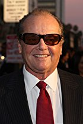
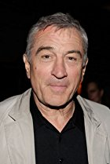
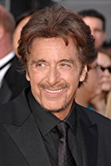
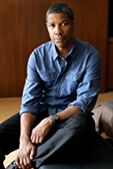
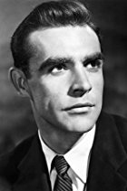

|
1º Jack Nicholson |
|
|  |
John Joseph "Jack" Nicholson (Nova Iorque, 22 de abril de 1937) é um premiado ator, cineasta, produtor de cinema e roteirista estadunidense, considerado por muitos um dos maiores atores da história.
Foi indicado ao Oscar doze vezes, e ganhou o Oscar de melhor ator por duas: pelos filmes One Flew Over The Cuckoo's Nest e As Good As It Gets.
Também ganhou o Oscar de melhor ator coadjuvante pelo filme de 1983, Terms Of Endearment.
Nicholson é conhecido por interpretar vilões como Jack Torrance em The Shining, Frank Costello em The Departed e O Coringa em Batman, entre outros.
|
|
2º Robert De Niro |
|
|  |
Robert Anthony De Niro Jr. (Nova Iorque, 17 de agosto de 1943) é um premiado ator, diretor e produtor de cinema ítalo-estadunidense.
Seus primeiros grandes papéis foram nos filmes Bang the Drum Slowly (A Última Batalha de um Jogador) e Mean Streets (Caminhos Perigosos), ambos de 1973.
Em 1974, ele atuou no clássico The Godfather: Part II (O Poderoso Chefão: Parte II) como o jovem Vito Corleone, papel pela qual ganhou o Oscar de Melhor Ator Coadjuvante.
|
|
3º Al Pacino |
|
|  |
Alfredo James "Al" Pacino (Nova Iorque, 25 de abril de 1940) é um premiado ator, produtor, roteirista e cineasta norte-americano.
Conhecido, especialmente, por interpretar Michael Corleone na trilogia O Poderoso Chefão e Tony Montana em Scarface.
Ganhou o Oscar de Melhor Ator no 65ª Prêmio da Academia por sua atuação como Frank Slade em Perfume de Mulher.
Antes de sua vitória já havia recebido sete indicações ao Oscar, incluindo uma naquele mesmo ano.
|
|
4º Denzel Washington |
|
|  |
Denzel Hayes Washington (Mount Vernon, 28 de Dezembro de 1954)é um ator e produtor norte-americano.
Denzel Washington já recebeu dois Oscares: Melhor Ator Coadjuvante por Glory (1990) e Melhor Ator por Training Day (2002); um Prêmio Tony, dois Globos de Ouro e um outro pelo conjunto da obra.
|
|
5º Sean Connery |
|
|  |
Sir Thomas Sean Connery Kt. (Edimburgo, 25 de agosto de 1930) é um renomado ator escocês.
É famoso desde a década de 1960 pelo papel no cinema do agente secreto do MI6 britânico, James Bond, criado pelo escritor Ian Fleming.
Nestes mais de quarenta anos de estrelato, Connery construiu uma sólida carreira cinematográfica após deixar o personagem de 007 em 1971, estrelando filmes importantes e populares nos anos seguintes como The Man Who Would Be King (br: O Homem que Queria Ser Rei), Der Name der Rose (br: O Nome da Rosa), Indiana Jones and the Last Crusade (Indiana Jones e a Última Cruzada), The Untouchables (Os Intocáveis) e The Hunt for Red October (br: Caçada ao Outubro Vermelho), entre outros.
Por sua contribuição às artes cinematográficas e ao Império Britânico, foi sagrado Sir pela rainha Elizabeth II em 2000, apesar de ao longo de toda a vida ter lutado pela causa da independência da Escócia do Reino Unido.
|